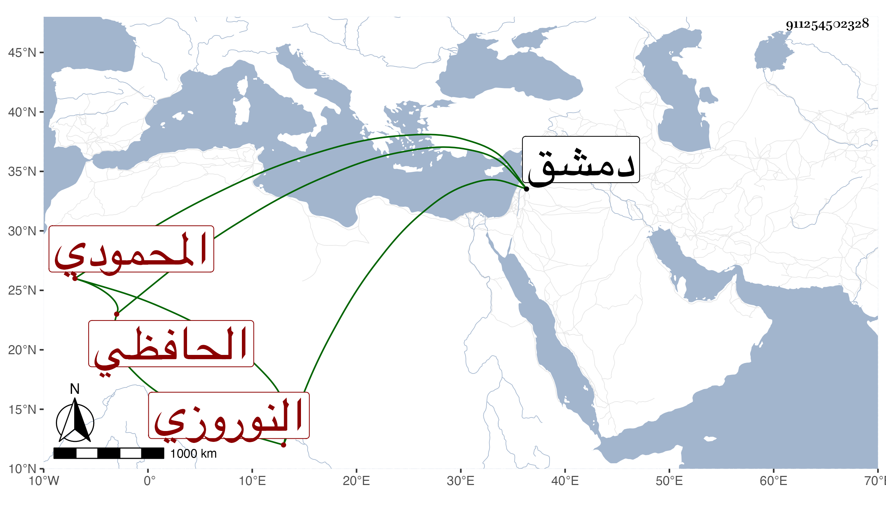

0902Sakhawi.DawLamic.ITO20230111-ara1.EIS1600.911254502328
Biography ID: 911254502328
828
أرغون شاه النوروزي نورز الحافظي ويقال له المحمودي أيضا عمل استدارية أستاذه فظلم وعسف فلما انقضت أيامه صودر ثم ولي الوزارة بعد الفخر بن أبي الفرج ثم قبض عليه وعوقب ثم نفي ثم عاد وولاه الأشرف الاستادراية مرة بعد أخرى ثم أضيفت إليه الوزارة أيضا ثم عزل عنهما وصودر ثم أفرج عنه بطالا ثم استقر في استادارية السلطان بدمشق حتى مات في حادي عشر رجب سنة أربعين ، وكان أعور طوالا مسمنا ظالما عسوفا من سيآت الدهر ، ذكره شيخنا في أبنائه باختصار .
